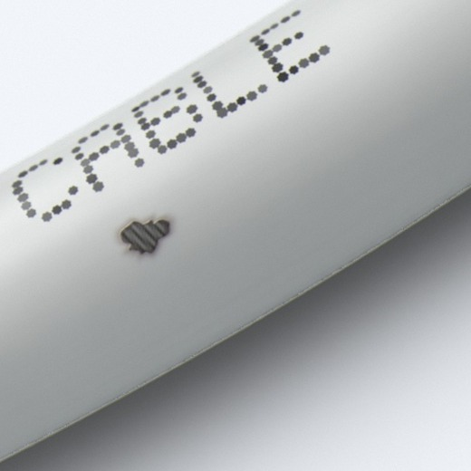

The entire cable and tube surface
Cables and tubes up to 80 mm in diameter. Each defect triggers an alarm identifying its type, to keep defective products off the market.

Deformation

Cross-section reductions

Scratches and scuffs

Bubbles

Colour defects

Embedded impurities

Cracks and splits

Tube defects